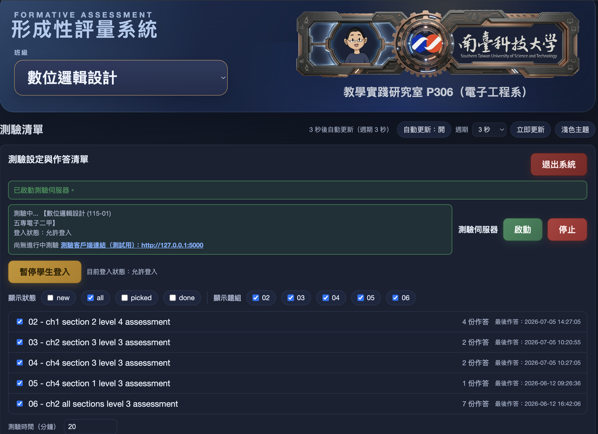
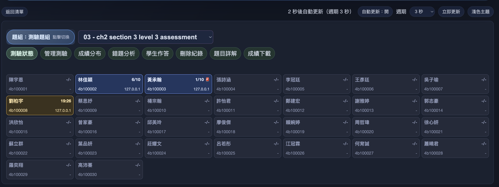
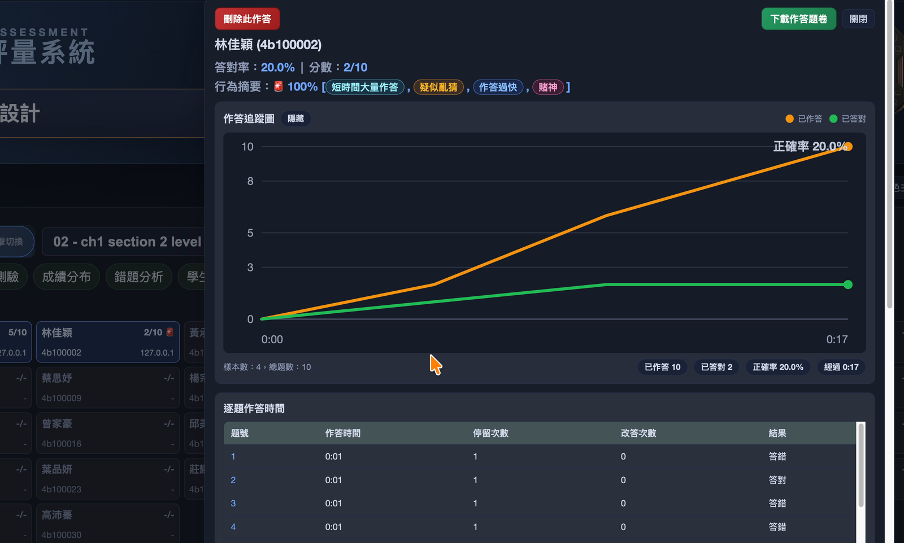
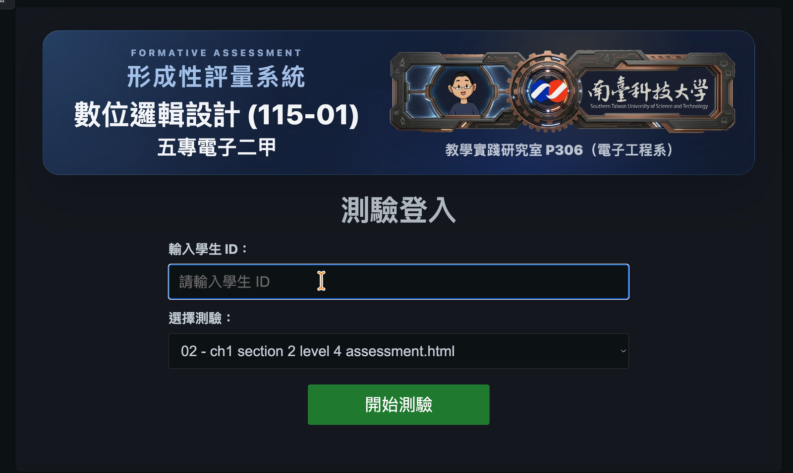
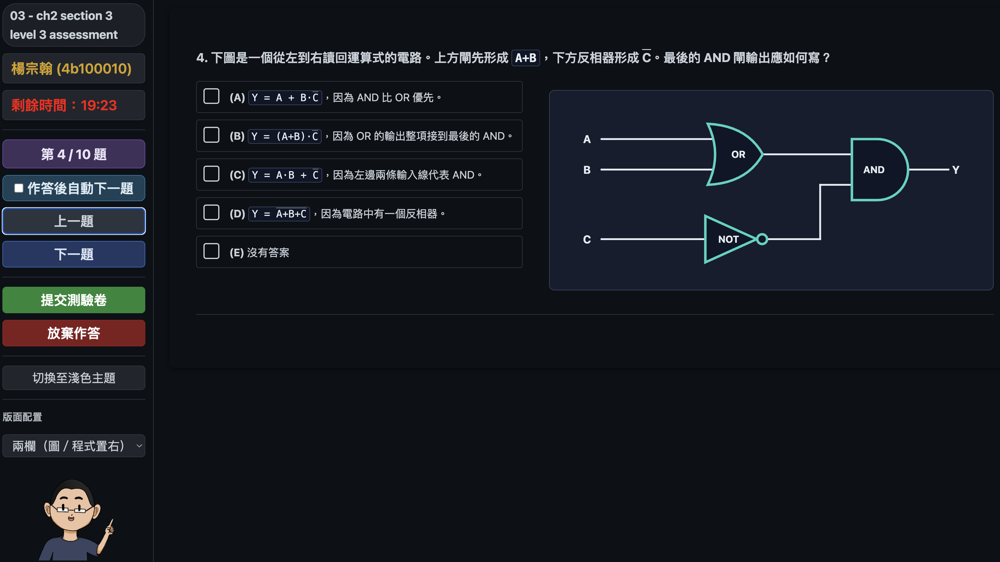
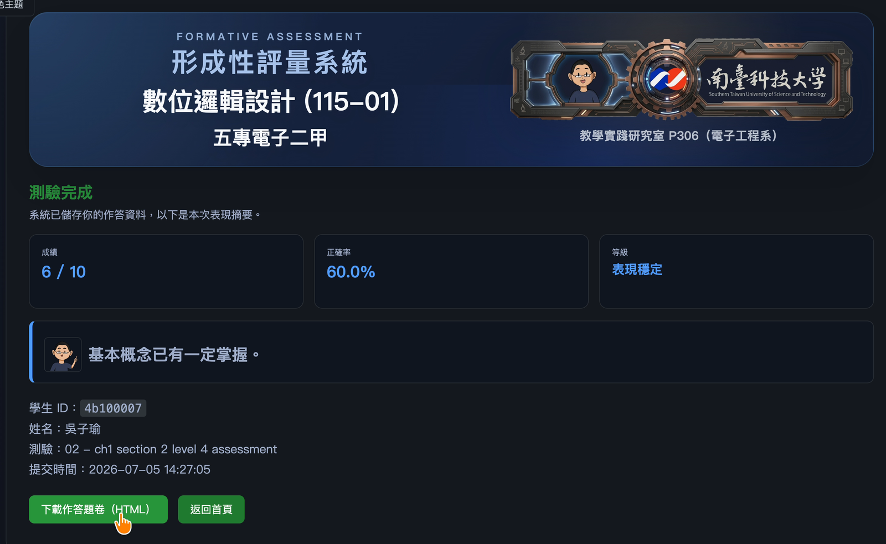
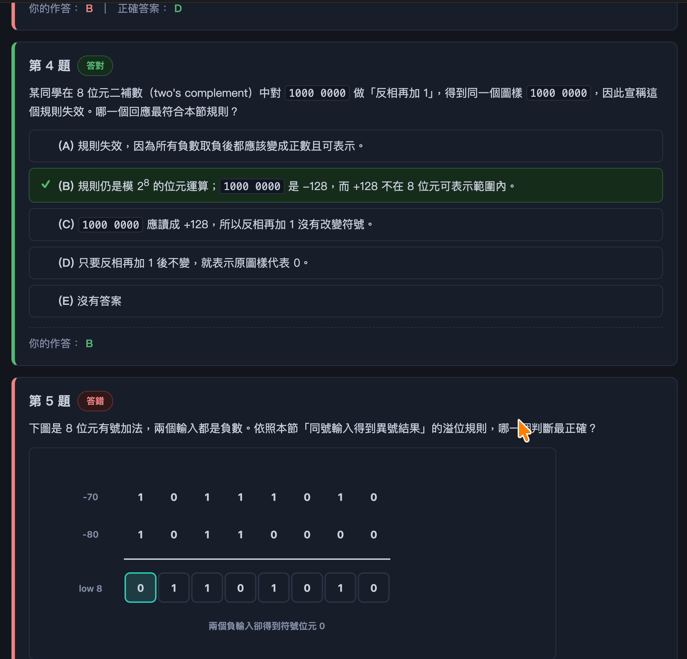

這份講義是 Workshop 1、2、3 開始前的自學與簡報參考。它先呈現整個系列最後希望完成的方向：從環境建置與 AI Agent 使用能力出發，進一步開發與發布網頁應用程式，最後整合成可進入課堂使用的形成性評量系統。
這個範例系統可以先被理解成一個目標畫面。第一階段先掌握用途與教學意圖，技術細節會在後續工作坊逐步拆解。此處的重點是建立共同想像：經過 Workshop 1 的 AI Agent 工作環境與操作能力、Workshop 2 的網頁應用開發與發布流程、Workshop 3 的 AI 形成性評量系統建置後，AI Agent 可以被放進真實教學情境，協助教師建立自己的教學工具。
| 主題 | 重點 | 學習意義 |
|---|---|---|
| 形成性評量 | 評量不是只給分數，而是幫助教師知道學生現在懂到哪裡。 | 評量資料可以成為課堂調整與學習補強的依據。 |
| 教師端儀表板 | 教師可以管理測驗、看到學生進度、正確率與作答狀態。 | 全班狀態可以被即時觀察，而不是等到課後才整理。 |
| 學生端作答畫面 | 學生可以登入、作答、提交，並取得可回頭檢查的紀錄。 | 作答流程要簡單，回饋資料要能被學生帶走。 |
| 提交後的回饋 | 分數只是起點，錯題與作答紀錄才是後續補強的材料。 | 學生可以知道自己該回頭看哪些概念。 |
| AI 輔助教學 | AI 適合用來協助診斷、整理複習方向與產生延伸練習。 | AI 的位置是學習鷹架，而不是代替學生理解。 |
形成性評量的核心不是考倒學生，而是在課堂中快速回答三個問題：
如果評量資料只停留在分數，教師能做的判斷有限，學生也只知道自己考幾分。這個範例系統示範的是另一種設計方向：把作答進度、正確率、錯題紀錄與教材內容串起來，讓評量變成課堂中的即時訊號，也變成學生課後使用 AI 補強的材料。

教師端儀表板的第一個用途，是讓教師選擇本次課堂要使用的測驗。這裡可以看到課程、題組與不同 assessment。設計重點不是炫技，而是讓教師能依照教學進度快速切換適合的短測驗。

第二個用途，是讓教師即時看到學生正在做哪一份測驗、目前完成幾題、正確率如何、是否已提交。這些資訊可以幫助教師在課中做判斷：要繼續往下講、停下來補充，還是安排個別協助。

個別學生的細節畫面則用來觀察學習行為，例如作答速度、正確率變化與答題進度。這些標記只能當作教學觀察線索，不應直接當成懲罰依據。形成性評量的目標是協助學生補強，而不是把即時資料變成壓力來源。

學生端流程從登入與選擇測驗開始。這一步的教學意義是確保作答紀錄能正確對應到學生本人，後續才有可能做個別化回饋。

作答畫面讓學生逐題回答、查看目前進度，並在完成後提交。學生端的重點是降低作答摩擦，讓短測驗可以在課堂中快速完成，同時留下可回頭檢查的作答紀錄。

提交後，學生可以看到成績、正確率與簡短診斷。分數不是終點，而是後續學習補強的入口。

作答回顧會顯示每題的答題結果、學生答案與正確答案。這份紀錄可以搭配教材交給 AI，請 AI 協助分析錯誤概念、建議複習段落，或產生相似但不同的練習題。
這個範例不是要在一開始就複製完整系統，而是呈現系列工作坊逐步累積的能力路徑。
| Workshop | 學習重點 | 對應到範例系統 |
|---|---|---|
| Workshop 1 | 建立 AI Agent 工作環境與使用能力。 | 完成個人筆電工具安裝與驗證，理解對話式 AI、雲端 AI 服務與本地端 AI Agent 的差異，並實作開啟軟體、瀏覽網頁、擷取資料、整理資訊等任務流程。 |
| Workshop 2 | 利用 AI Agent 開發與發布網頁應用程式。 | 以自然語言描述需求，透過 AI Agent 協助系統規劃、程式碼產生、功能修改、除錯、文件撰寫與 GitHub Pages 發布，建立可分享的教學應用。 |
| Workshop 3 | 建置 AI 形成性評量系統。 | 完成教師端 Dashboard 與學生端測驗介面，掌握作答進度與學習表現，並建立由教材生成評量題目、驗證答案與分析題目品質的流程。 |
這份講義是 Workshop 1、2、3 開始前的自學與簡報參考。它先呈現整個系列最後希望完成的方向：從環境建置與 AI Agent 使用能力出發，進一步開發與發布網頁應用程式，最後整合成可進入課堂使用的形成性評量系統。
這個範例系統可以先被理解成一個目標畫面。第一階段先掌握用途與教學意圖，技術細節會在後續工作坊逐步拆解。此處的重點是建立共同想像：經過 Workshop 1 的 AI Agent 工作環境與操作能力、Workshop 2 的網頁應用開發與發布流程、Workshop 3 的 AI 形成性評量系統建置後，AI Agent 可以被放進真實教學情境，協助教師建立自己的教學工具。
| Topic | 重點 | 學習意義 |
|---|---|---|
| 形成性評量 | 評量不是只給分數，而是幫助teachers知道students現在懂到哪裡。 | 評量data可以成為課堂調整與學習補強的依據。 |
| teachers端儀表板 | teachers可以管理測驗、看到students進度、正確率與作答狀態。 | 全班狀態可以被即時觀察，而不是等到課後才整理。 |
| students端作答畫面 | students可以登入、作答、提交，並取得可回頭check的紀錄。 | 作答workflow要簡單，回饋data要能被students帶走。 |
| 提交後的回饋 | 分數只是起點，錯題與作答紀錄才是後續補強的材料。 | students可以知道自己該回頭看哪些概念。 |
| AI 輔助教學 | AI 適合用來協助診斷、整理複習方向與產生延伸practice。 | AI 的位置是學習鷹架，而不是代替students理解。 |
形成性評量的核心不是考倒學生，而是在課堂中快速回答三個問題：
如果評量資料只停留在分數，教師能做的判斷有限，學生也只知道自己考幾分。這個範例系統示範的是另一種設計方向：把作答進度、正確率、錯題紀錄與教材內容串起來，讓評量變成課堂中的即時訊號，也變成學生課後使用 AI 補強的材料。
教師端儀表板的第一個用途，是讓教師選擇本次課堂要使用的測驗。這裡可以看到課程、題組與不同 assessment。設計重點不是炫技，而是讓教師能依照教學進度快速切換適合的短測驗。
第二個用途，是讓教師即時看到學生正在做哪一份測驗、目前完成幾題、正確率如何、是否已提交。這些資訊可以幫助教師在課中做判斷：要繼續往下講、停下來補充，還是安排個別協助。
個別學生的細節畫面則用來觀察學習行為，例如作答速度、正確率變化與答題進度。這些標記只能當作教學觀察線索，不應直接當成懲罰依據。形成性評量的目標是協助學生補強，而不是把即時資料變成壓力來源。
學生端流程從登入與選擇測驗開始。這一步的教學意義是確保作答紀錄能正確對應到學生本人，後續才有可能做個別化回饋。
作答畫面讓學生逐題回答、查看目前進度，並在完成後提交。學生端的重點是降低作答摩擦，讓短測驗可以在課堂中快速完成，同時留下可回頭檢查的作答紀錄。
提交後，學生可以看到成績、正確率與簡短診斷。分數不是終點，而是後續學習補強的入口。
作答回顧會顯示每題的答題結果、學生答案與正確答案。這份紀錄可以搭配教材交給 AI，請 AI 協助分析錯誤概念、建議複習段落，或產生相似但不同的練習題。
這個範例不是要在一開始就複製完整系統，而是呈現系列工作坊逐步累積的能力路徑。
| Workshop | 學習重點 | 對應到範例系統 |
|---|---|---|
| Workshop 1 | 建立 AI Agent 工作環境與使用能力。 | 完成個人筆電工具安裝與驗證，理解對話式 AI、雲端 AI 服務與本地端 AI Agent 的差異，並實作開啟軟體、瀏覽網頁、擷取data、整理資訊等任務workflow。 |
| Workshop 2 | 利用 AI Agent 開發與發布網頁應用程式。 | 以自然語言描述需求，透過 AI Agent 協助系統規劃、程式碼產生、功能修改、除錯、文件撰寫與 GitHub Pages 發布，建立可分享的教學應用。 |
| Workshop 3 | 建置 AI 形成性評量系統。 | 完成teachers端 Dashboard 與students端測驗介面，掌握作答進度與學習表現，並建立由教材生成評量題目、驗證答案與analysis題目品質的workflow。 |